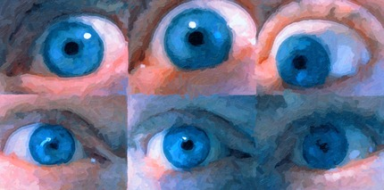

Buddy No More: Humanzee Soul Music Album

AI based on AI. When will it end. The original story does have an image of a Humanzee, but the story doesn't mention it at all. This is one of the better Humanzee images around.
https://emtoa.st/buddy-no-more-the-rise-of-a-sir/
Related posts

Humanzee want to hang out with you!
You may have heard of Oliver the humanzee, but did you know about Mitzy, Dainty, and Bobo? They live together…

The Dangers of Eye Contact with the Soulless
They say the eyes are the windows to the soul. But what if the eyes you are looking into have…

The Great Humanzee-Robot War: A Cautionary Tale of Playing God
In the year 2035, deep in the heart of the Amazon rainforest, a group of mad scientists had finally succeeded…
Mom Ignores Child to Talk on the Phone. What He Does Will Devastate Your Soul
“Ask the Doctor” where readers ask questions of the world renounced general practitioner Dr. Charles V. Fullerton. Dear Doctor…